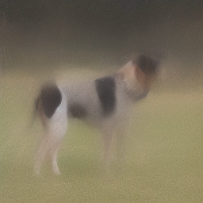
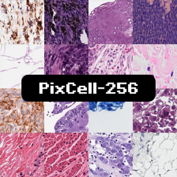
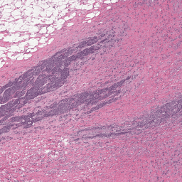
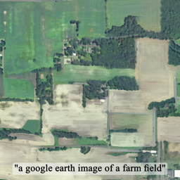
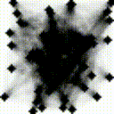

On the spectral properties of generative denoiser Jacobians
Preprint
In denoisers, the eigenvectors of the Jacobian encode generation quality. Increasing the spectrum during training improves generation quality.

Preprint
In denoisers, the eigenvectors of the Jacobian encode generation quality. Increasing the spectrum during training improves generation quality.
NeurIPS 2025
Speeding up training-free inference with a simple approximation. Also made a game that uses this algorithm. [Gameplay 1 / Gameplay 2]

Preprint
The first generative foundation model for digital histopathology images.

CVPR 2025
A multi-scale diffusion model to generate very large coherent histopathology images.

CVPR 2024
Self-supervised annotations for diffusion and how to extrapolate to large images.

NeurIPS 2022
Any inference task can use a diffusion model as an image prior. You can even solve the traveling salesman problem!
Alexandros Graikos, Nebojsa Jojic, Dimitris Samaras
Preprint
Nhan Ho, Alexandros Graikos, Dimitris Samaras
WACV 2026
Srikar Yellapragada, Alexandros Graikos, Zilinghan Li, Kostas Triaridis, Tarak Nath Nandi, Ji Dong K Bai, Beatrice Knudsen, Tahsin Kurc, Prateek Prasanna, Rajarsi R. Gupta, Ravi K Madduri, Joel Saltz, Dimitris Samaras
NeurIPS 2026
Ritik Raina, Abe Leite, Alexandros Graikos, Seoyoung Ahn, Gregory J Zelinsky
CCN 2026
Irene Kim, Sai Tanmay Reddy Chakkera, Alexandros Graikos, Dimitris Samaras, Akshat Dave
ECCV 2026 · Best paper honorable mention
Varun Belagali*, Srikar Yellapragada*, Alexandros Graikos, Saarthak Kapse, Zilinghan Li, Tarak Nath Nandi, Ravi K Madduri, Prateek Prasanna, Joel Saltz, Dimitris Samaras
DataCV Workshop @ CVPR 2026 · Best paper award
Snehal Singh Tomar, Alexandros Graikos, Arjun Krishna, Dimitris Samaras, Klaus Mueller
TMLR 2026
Alexandros Graikos, Kostas Triaridis, Esmeralda S. Whitammer, Dimitris Samaras
ICLR 2026 2nd Workshop on Deep Generative Model in Machine Learning: Theory, Principle and Efficacy
Ritik Raina, Abe Leite, Alexandros Graikos, Seoyoung Ahn, Dimitris Samaras, Greg Zelinsky
ICLR 2026
Alexandros Graikos, Nebojsa Jojic, Dimitris Samaras
NeurIPS 2025
Srikar Yellapragada*, Alexandros Graikos*, Zilinghan Li, Kostas Triaridis, Varun Belagali, Tarak Nath Nandi, Karen Bai, Beatrice S. Knudsen, Tahsin Kurc, Rajarsi R. Gupta, Prateek Prasanna, Ravi K Madduri, Joel Saltz, Dimitris Samaras
Preprint
Kostas Triaridis, Alexandros Graikos, Aggelina Chatziagapi, Grigorios G. Chrysos, Dimitris Samaras
Preprint
Srikar Yellapragada, Alexandros Graikos, Kostas Triaridis, Zilinghan Li, Tarak Nath Nandi, Ravi K Madduri, Prateek Prasanna, Joel Saltz, Dimitris Samaras
MICCAI 2025
Sachin Kumar Danisetty, Alexandros Graikos, Srikar Yellapragada, Dimitris Samaras
5th Deep Generative Models Workshop @ MICCAI 2025
Ritik Raina, Abe Leite, Alexandros Graikos, Seoyoung Ahn, Greg Zelinsky
CCN 2025
Alexandros Graikos*, Srikar Yellapragada*, Kostas Triaridis, Prateek Prasanna, Rajarsi R. Gupta, Joel Saltz, Dimitris Samaras
CVPR 2025